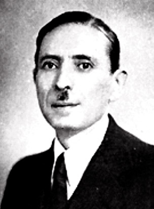
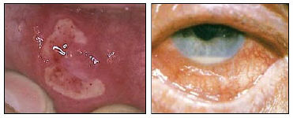

|  |
Behçet's syndrome = Recurrent systemic disease characterized
by uveitis with hypopyon, recurrent ulceration of the mucous membranes
of the mouth and pharynx, and ulceration of the genitalia.
| 
Mouth ulcer and hypopyon in Behçet's disease. |
Hulusi Behçet was born when Istanbul was still the capital of the Ottoman Empire, ”the sick man of Europe.” His father, Ahmet Behçet, was a well-known businessman who was among the friends of Mustafa Kemal Atatürk, the founder of Turkish Republic. Hulusi Behçet lost his mother when he was a child and he was raised by his grandmother.
He got his primary education in Damascus because of his father's business affairs there. He learned French, Latin and German as a native speaker. Behçet pursued his education at Gülhane Military Medical Academy in Istanbul, graduating at the age of 21 in 1910. He subsequently specialized in dermatology and venereal diseases.
During the war of 1914-1918 he served at the Edirne Military Hospital as a specialist in dermatology and venereal diseases and an assistant to the head of the hospital. After the war between 1918-1919, he first went to Budapest and then to Berlin's Charité Hospital to improve his medical knowledge.
Behçet never thought of living in Europe, however, and after his return to Turkey he commenced a private clinic in Cagaloglu. Then in 1923 he was appointed as the head medical doctor at the Hasköy Venereal Diseases Hospital. Six months later, he moved to Guraba Hospital, which is now part of the Istanbul Medical College, as a dermatologist.
In 1923, the year of the establishment of the Turkish Republic, he married Refika Davaz, who was sister of one his patients. His wife was the daughter of a famous diplomat, which led him to accept many patients from high society of Istanbul.
During the university reform in Turkey, Hulusi Behçet was appointed professor to the clinic of dermatology and syphilis in 1933, receiving the degree of ordinarius in 1939. He held his professorship for 14 years, until 1947. He was the first person in Turkish academic life that received the title of professor.
He had been interested in syphilis since 1922 and he had published many international articles on its diagnosis, treatment, hereditary properties, serology and social aspects.
He translated many articles into Turkish to help educate new generations, and he was in the publishing vanguard to improve Turkish medicine. In 1924 he was responsible for the establishment of the first dermato-venerology journal of Turkey called Turkish Archives of Dermatology and Syphilology. In 1939, he was elected as a correspondent member to the German journals Dermatologische Wochenschrift (Hamburg) and Deutsche Medizinische Wochenschrift (Berlin). He was for several years one of the editors of Dermatologische Wochenschrift
Behçet’s most important contribution to medical literature was the monograph published in 1940 called Clinical and Practical Syphilis, Diagnosis and Related Dermatoses. Every page of this book contains an aspect of syphilis and the footnotes, provides a wealth of detailed information about the differential diagnosis of other skin diseases. This book, despite its outdated style, still retains its value and spirit in medicine as being the only example in its field.
Behçet was a retiring, shy man who was well regarded by all of his colleagues. He was deeply interested in the arts, particularly literature. Generally he was nervous and suffered from insomnia, colitis and angina pectoris, but sometimes he was joyful and good-humoured among friends. Among them were the French dermatologist Henri Gougerot (1881-1955), Prof. Dr. Cartoud, and several distinguished Turkish physicians.
He was divorced from his wife seven years before his death from a sudden heart attack on March 8, 1948.
Behçet was troubled with ill health throughout his life, with chronic insomnia, spastic colitis and heart trouble. A heavy smoker, he fell ill with angina pectoris and respiratory insufficiency, and died of myocardial infarction in 1948, at the age of only 59.